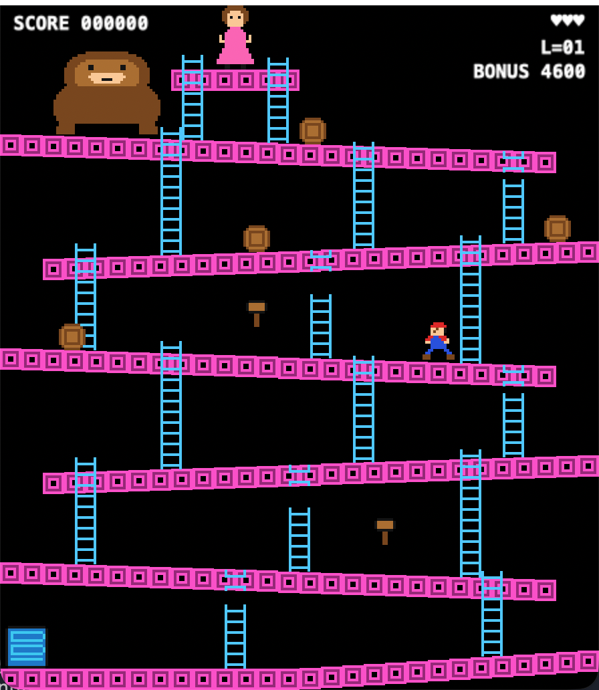
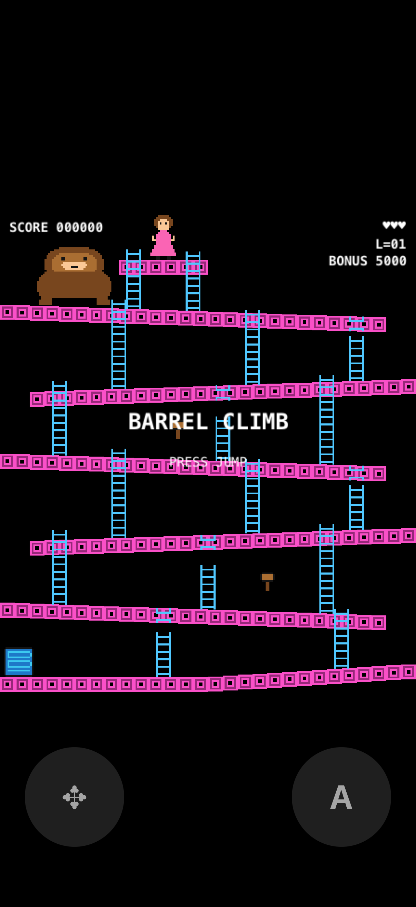
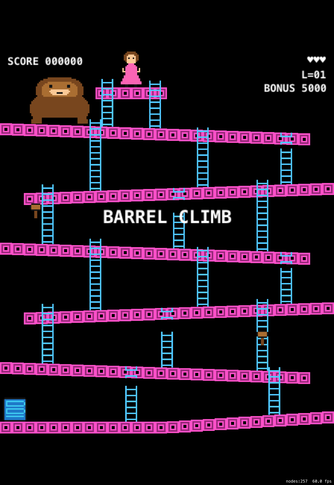

36Barrel Climb
Original arcade platformer for macOS and iOSJeu de plateforme d'arcade original pour macOS et iOS原創 macOS 與 iOS 街機平台遊戲
Six sloping girders, a rain of barrels, two hammers and a rescue at the top.Six poutrelles en pente, une pluie de tonneaux, deux marteaux et un sauvetage tout en haut.六道傾斜的鋼梁、一陣木桶雨、兩把鐵鎚，以及頂端等待的救援。
An original arcade platformer for your Mac and your iPhone. Built to hold its shape on the iPhone Duo, folded or open.Un jeu de plateforme d'arcade original pour votre Mac et votre iPhone. Conçu pour garder sa forme sur l'iPhone Duo, plié ou ouvert.一款為你的 Mac 與 iPhone 打造的原創街機平台遊戲。在 iPhone Duo 上無論折起或展開，都能保持畫面比例。

Tests: 76Tests : 76測試：76
Every rule below is pinned by one.Chaque règle ci-dessous est verrouillée par l'un d'eux.下方的每一條規則都由一個測試鎖定。
Step: 1/60 sPas : 1/60 s步長：1/60 秒
Fixed. The simulation is a pure function.Fixe. La simulation est une fonction pure.固定。模擬是一個純函式。
Screen: 224x256Écran : 224x256畫面：224x256
Logical points. One scene, any shape of display.Points logiques. Une seule scène, quelle que soit la forme de l'écran.邏輯點。一個場景，適用任何形狀的螢幕。
Dependencies: 0Dépendances : 0相依套件：0
Art and audio generated by two scripts.Graphismes et sons générés par deux scripts.美術與音效由兩支腳本產生。
How it playsComment on joue怎麼玩
| ActionAction動作 | Mac | ControllerManette控制器 | iPhone |
|---|---|---|---|
| Walk, climbMarcher, grimper行走、攀爬 | Arrow keys or WASDFlèches ou WASD方向鍵或 WASD | D-pad or left stickCroix directionnelle ou stick gauche十字鍵或左搖桿 | Left padPavé de gauche左側方向盤 |
| Jump, startSauter, commencer跳躍、開始 | SpaceEspace空白鍵 | A | Right buttonBouton de droite右側按鈕 |
Barrels roll down every girder and pick a ladder at random. Jump one for 100 points; touch one and you lose a life. A ladder is no shelter.Les tonneaux dévalent chaque poutrelle et choisissent une échelle au hasard. Sautez-en un pour 100 points ; touchez-en un et vous perdez une vie. Une échelle n'est pas un abri.木桶會沿著每一道鋼梁滾下，並隨機選擇梯子。跳過一個得 100 分；碰到一個就失去一條命。梯子不是避難所。
Two hammers hang on the way up. Nine seconds of swinging, 300 a barrel — but you can neither jump nor climb while you hold one.Deux marteaux sont suspendus sur le chemin. Neuf secondes à frapper, 300 par tonneau — mais impossible de sauter ou de grimper tant que vous en tenez un.往上的路上掛著兩把鐵鎚。九秒的揮舞時間，每個木桶 300 分 — 但拿著鐵鎚時既不能跳也不能爬。
Every eighth barrel is blue. Let it reach the oil drum and a fireball climbs out to hunt you. Fireballs use the ladders too.Un tonneau sur huit est bleu. Laissez-le atteindre le bidon d'huile et une boule de feu en sort pour vous traquer. Les boules de feu prennent aussi les échelles.每第八個木桶是藍色的。讓它滾到油桶，就會冒出一團火球來追捕你。火球也會爬梯子。
Five of the sixteen ladders are broken and stop halfway. You can start up them; you cannot get out that way.Cinq des seize échelles sont cassées et s'arrêtent à mi-hauteur. Vous pouvez commencer à les gravir ; vous ne pouvez pas sortir par là.十六座梯子中有五座是斷的，只到一半。你可以開始往上爬，但無法從那裡出去。
Reach the platform at the top before the bonus hits zero. Then it all starts again, faster.Atteignez la plateforme du sommet avant que le bonus tombe à zéro. Puis tout recommence, plus vite.在獎勵分數歸零前抵達頂端平台。接著一切重新開始，而且更快。
Ready for the iPhone DuoPrêt pour l'iPhone Duo為 iPhone Duo 做好準備
The Duo folds between a 5.4-inch outer screen and a 7.6-inch inner one. Barrel Climb carries no code for either.Le Duo se plie entre un écran extérieur de 5,4 pouces et un écran intérieur de 7,6 pouces. Barrel Climb ne contient de code ni pour l'un ni pour l'autre.Duo 可在 5.4 吋外螢幕與 7.6 吋內螢幕之間折疊。Barrel Climb 沒有為任何一者撰寫專屬程式碼。
The stage is 224 by 256 logical points and the scene scales to fit whatever display it is handed, so the picture keeps its tall arcade shape and letterboxes the rest — in a Mac window, on a phone, on a tablet, and on both halves of a fold. The touch controls anchor to the safe area rather than to fixed coordinates, so they follow the screen as it changes. The app targets iOS 26, the release the Duo ships with.La scène mesure 224 sur 256 points logiques et s'adapte à l'écran qu'on lui confie : l'image garde sa forme haute d'arcade et le reste est comblé de bandes noires — dans une fenêtre Mac, sur un téléphone, sur une tablette, et sur les deux moitiés d'un écran pliable. Les commandes tactiles s'ancrent à la zone de sécurité plutôt qu'à des coordonnées fixes, si bien qu'elles suivent l'écran quand il change. L'app cible iOS 26, la version livrée avec le Duo.舞台為 224 × 256 個邏輯點，場景會縮放以符合任何交給它的螢幕，因此畫面保持高瘦的街機比例，其餘部分以黑邊填補 — 無論是在 Mac 視窗、手機、平板，或是折疊螢幕的兩半上。觸控操作錨定在安全區域，而非固定座標，因此會隨螢幕變化而跟著移動。App 以 iOS 26 為目標，也就是 Duo 出廠搭載的版本。
No Duo simulator ships with Xcode 27.0 beta and the phone arrives on 23 October 2026, so this is a design that holds rather than a device that has been tested. The two screens below bracket the fold: a 19.5:9 phone and a 4:3 tablet.Aucun simulateur de Duo n'est fourni avec Xcode 27.0 bêta et le téléphone arrive le 23 octobre 2026 : c'est donc une conception qui tient, plutôt qu'un appareil qui a été testé. Les deux écrans ci-dessous encadrent le pliage : un téléphone 19,5:9 et une tablette 4:3.Xcode 27.0 beta 並未附帶 Duo 模擬器，而這支手機要到 2026 年 10 月 23 日才上市，因此這是一個站得住腳的設計，而非已經實機測試過的裝置。下方兩個畫面涵蓋了折疊的兩端：一支 19.5:9 的手機與一台 4:3 的平板。


Under the hoodSous le capot幕後原理
The game is a pure functionLe jeu est une fonction pure遊戲是一個純函式
The simulation is a Swift package that imports no UI framework, no clock and no system random source. It advances by exactly 1/60 s from an input struct and a seeded random source, and hands back the list of things that happened. That is why 76 deterministic tests cover every rule on this page and finish in hundredths of a second, without ever opening a window.La simulation est un package Swift qui n'importe aucun framework d'interface, aucune horloge et aucune source aléatoire du système. Elle avance d'exactement 1/60 s à partir d'une structure d'entrées et d'une source aléatoire à graine, et renvoie la liste de ce qui s'est passé. C'est pourquoi 76 tests déterministes couvrent chaque règle de cette page et s'exécutent en quelques centièmes de seconde, sans jamais ouvrir de fenêtre.模擬是一個 Swift 套件，不匯入任何 UI 框架、時鐘或系統亂數來源。它根據一個輸入結構與一個帶種子的亂數來源，每次精確前進 1/60 秒，並回傳發生事件的清單。正因如此，76 個確定性測試涵蓋了本頁的每一條規則，而且在百分之幾秒內就跑完，完全不必開啟視窗。
The screen only mirrors itL'écran ne fait que la refléter畫面只是它的鏡像
One SpriteKit scene of 224 x 256 logical points copies the world into sprite nodes after each step and turns the returned events into sound. It never owns game state. Fitting that picture to the display is a single setting, which is the entire foldable-phone support, and one Xcode target covers macOS and iOS from one generated project.Une seule scène SpriteKit de 224 x 256 points logiques recopie le monde dans des nœuds de sprites après chaque pas et transforme les événements renvoyés en sons. Elle ne possède jamais l'état du jeu. Adapter cette image à l'écran tient en un seul réglage, qui constitue tout le support des téléphones pliables, et une seule cible Xcode couvre macOS et iOS depuis un projet généré unique.一個 224 x 256 邏輯點的 SpriteKit 場景，會在每一步之後把世界複製到 sprite 節點中，並把回傳的事件轉成聲音。它從不持有遊戲狀態。讓畫面符合螢幕只需一項設定，這就是對折疊手機的全部支援；而一個 Xcode target 就從單一產生的專案涵蓋 macOS 與 iOS。
Build itLe compiler自行建置
You need Xcode 27 and XcodeGen. No signing setup, no developer account.Il vous faut Xcode 27 et XcodeGen. Aucune configuration de signature, aucun compte développeur.你需要 Xcode 27 與 XcodeGen。不需要設定簽章，也不需要開發者帳號。
Clone it.Clonez-le.複製儲存庫。
git clone https://github.com/vincentlauriat/barrel-climb.git
cd barrel-climbPlay it on your Mac.Jouez-y sur votre Mac.在你的 Mac 上玩。
make run-macOr put it in the iPhone Simulator.Ou installez-le dans le simulateur iPhone.或把它裝進 iPhone 模擬器。
make build-ios
xcrun simctl install booted \
build/DerivedData/Build/Products/Debug-iphonesimulator/'Barrel Climb.app'
xcrun simctl launch booted fr.lauriat.DonkeyKongPoke at it. The tests need no simulator, and the art, audio and icon all regenerate from source.Bidouillez-le. Les tests n'ont besoin d'aucun simulateur, et les graphismes, les sons et l'icône se régénèrent tous depuis les sources.動手玩玩看。測試不需要模擬器，美術、音效與圖示也都能從原始碼重新產生。
make test
make sprites sounds iconGet the sourceObtenir les sources取得原始碼
Source, issues and roadmap on GitHub. Next up: the pie factory, the elevators and the rivets.Sources, tickets et feuille de route sur GitHub. Prochaines étapes : l'usine à tartes, les ascenseurs et les rivets.原始碼、問題回報與開發藍圖都在 GitHub 上。接下來：派工廠、電梯與鉚釘。